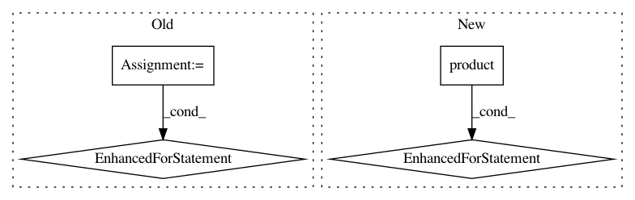

2762d36373084b68821701cfd4162918524b417d,src/BayesianModel.py,BayesianModel,add_rule_for_states,#BayesianModel#,132
Before Change
Sets new rule for order of states
if self._all_states_mentioned(node, states):
_order = list()
for user_given_state in states:
for state in self.node[node]["_states"]:
if state["name"] == user_given_state:
_order.append(self.node[node]
["_states"].index(state))
break
self.node[node]["_rule_for_states"] = tuple(_order)
def get_states(self, node):
Returns tuple with states in user-defined order
After Change
Sets new rule for order of states
if self._all_states_mentioned(node, states):
_order = list()
for user_given_state, state in itertools.product(
states, self.node[node]["_states"]):
if state["name"] == user_given_state:
_order.append(self.node[node]
["_states"].index(state))
break
self.node[node]["_rule_for_states"] = tuple(_order)
def get_states(self, node):
Returns tuple with states in user-defined order
In pattern: SUPERPATTERN
Frequency: 3
Non-data size: 4
Instances
Project Name: pgmpy/pgmpy
Commit Name: 2762d36373084b68821701cfd4162918524b417d
Time: 2013-11-03
Author: ankurankan@gmail.com
File Name: src/BayesianModel.py
Class Name: BayesianModel
Method Name: add_rule_for_states
Project Name: EducationalTestingService/skll
Commit Name: 94f2c9d4bd78723440418b6ea914012d83b00bed
Time: 2019-10-18
Author: nmadnani@ets.org
File Name: tests/test_utilities.py
Class Name:
Method Name: test_generate_predictions
Project Name: pgmpy/pgmpy
Commit Name: b384268df66742de0bc92a13db162b8409dda730
Time: 2019-04-19
Author: ankurankan@gmail.com
File Name: pgmpy/readwrite/BIF.py
Class Name: BIFReader
Method Name: get_values